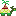
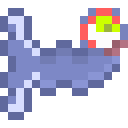
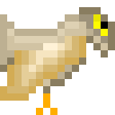

– Tá... Me parece que recuperar o brinquedo de seu filho não parece tãaao emergencial assim como as outras situações...
- Meu filho é muito apegado nesse brinquedo, desde mais novo, e isso o fez ficar muito mal da saúde, por favor, ajude meu filho!!! Aliás, tenho de ser imparcial... Resolva um desses três problemas para mim, e já vai estar me ajudando muito! Eu vou lhe fornecer tudo! Tenho criaturas poderosas em minha posse, se você decidir escalar as montanhas, lhe fornecerei Tolgar, uma criatura terrestre com muita força nas pernas! Se decidir enfrentar o fundo do mar, além do equipamento de mergulho profissional, lhe emprestarei Milgun, uma criatura marinha fantástica e veloz que consegue nadar nessas correntezas. Ou então se decidir se aventurar nos céus para resgatar a família no outro lado do desfiladeiro, eu então lhe permito utilizar Vawlarya, uma criatura área grande e majestosa que com certeza não te deixará nas mãos, mesmo com esses ventos fortes! E então, o que você irá escolher?
Um momento de dúvida pairou sobre o âmago do meu consciente, mas eu sabia que a minha decisão tinha de ser breve. Era uma preguiça ter colocado tanta responsabilidade nas minhas costas? Era... Mas fazer o que, não é mesmo? Alguma coisa bem lá no fundo dizia que eu iria conseguir. Ou pelo menos eu espero.
-  Tolgar, a criatura terrestre;
- Milgun, a criatura marinha;
- Vawlarya, a criatura áerea.

